Data Analysis with R
14 - Model building and selection
Saskia A. Otto
Postdoctoral Researcher
Model building
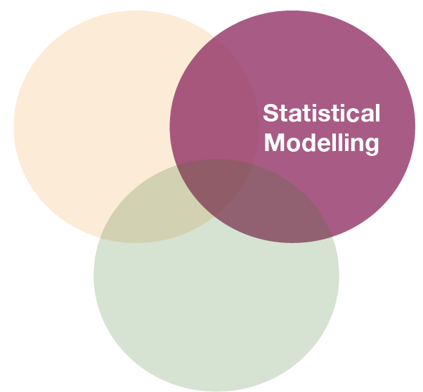
Model building in 6 steps
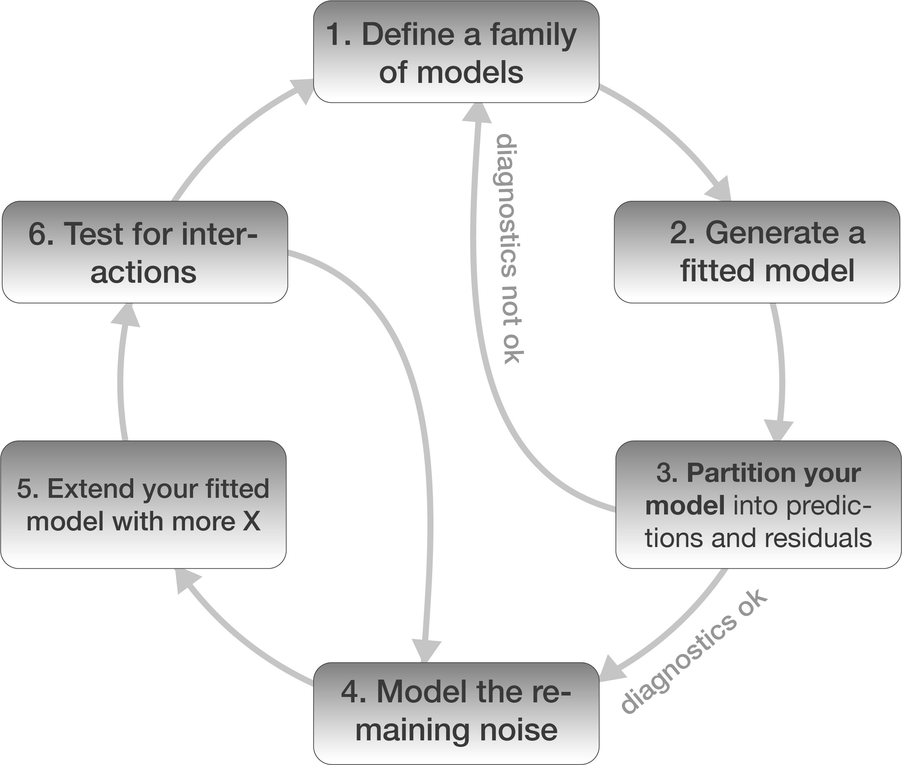
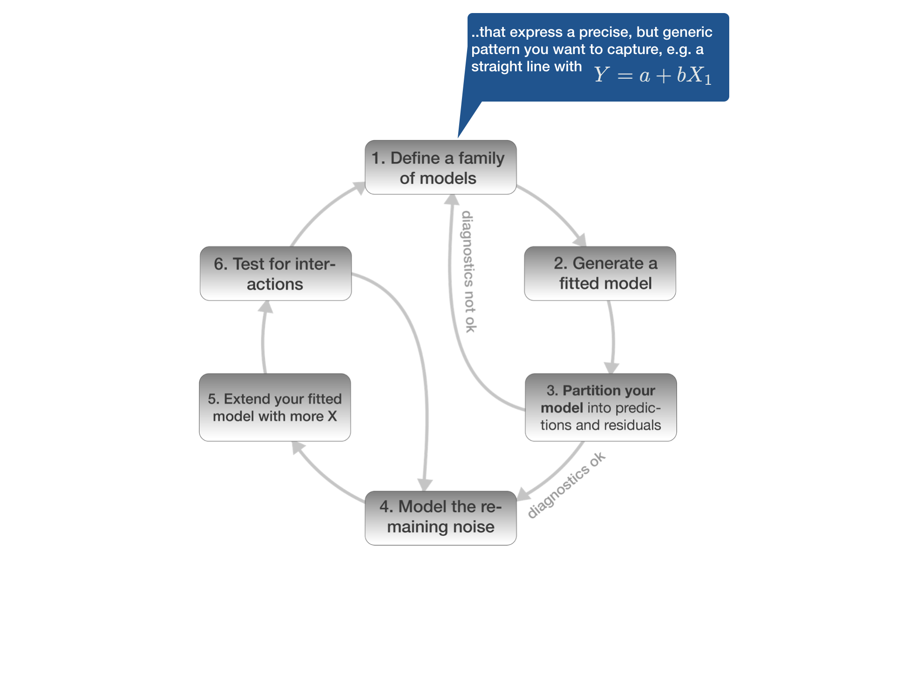

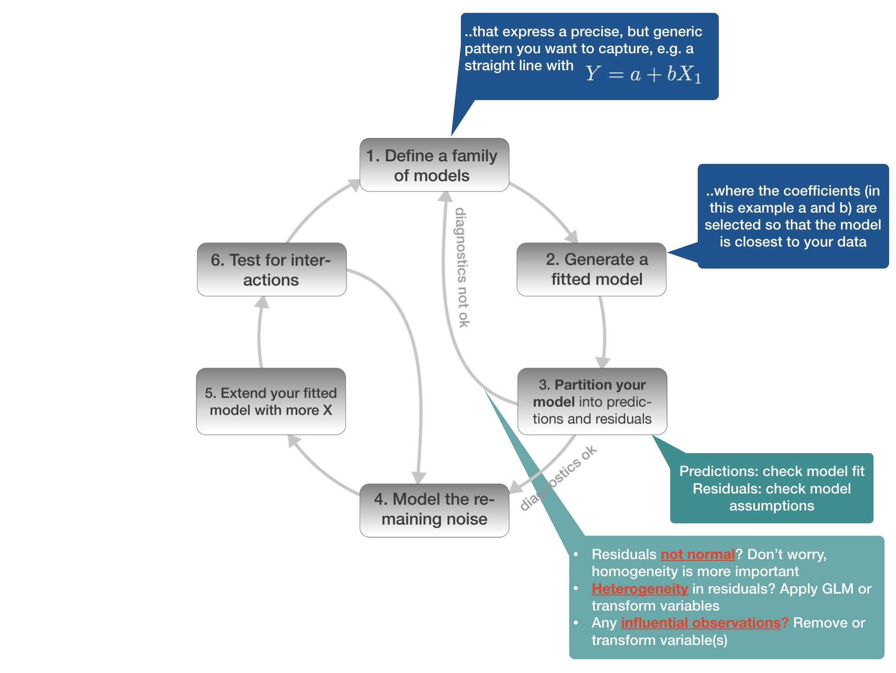
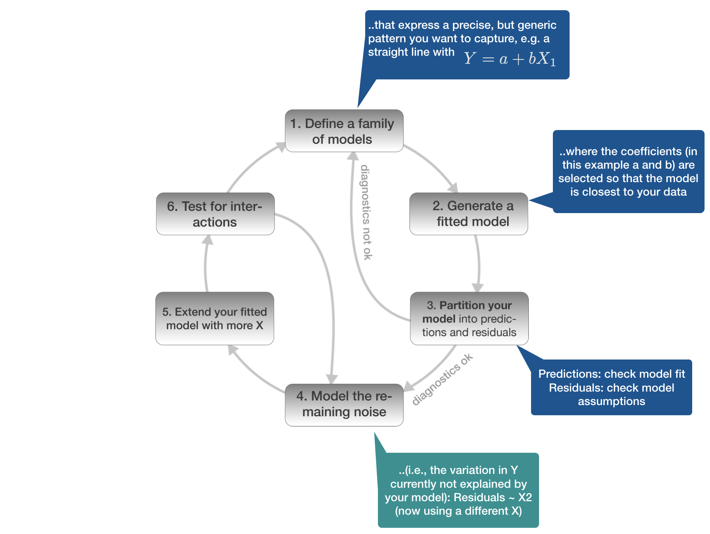
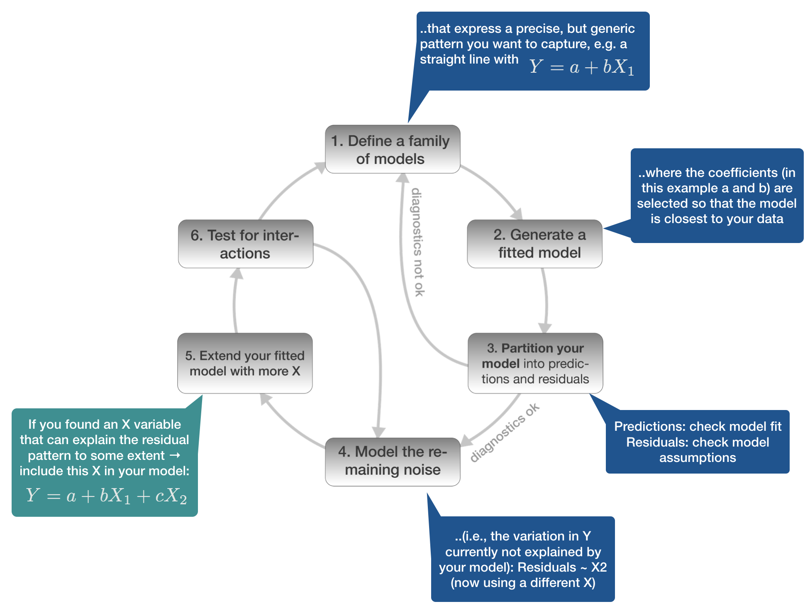

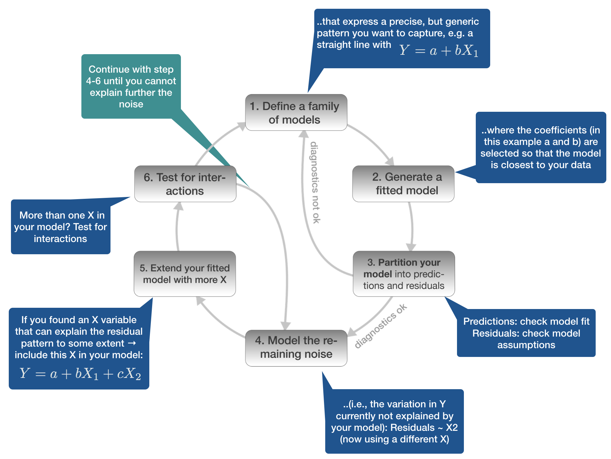
NOTE: You can do step 1-6 also with different model families, compare them and select the one that fits best.
1. Defining the model family

Aim
You want to find the function that best explains Y
\[Y_{i} = f(\mathbf{X_{i}}) + \epsilon_{i}\]
Note:
X can be also a vector of several explanatory variables.The function for a straight line is \(Y = a + bX\)
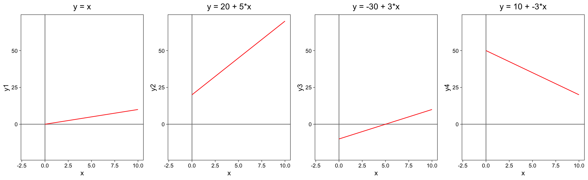
Where y is the dependent variable, a is the intercept, which is the value at which the line crosses the y-axis (when x is zero), b is the coefficent for the slope, and x is the independent variable.
Quadratic relationships \(Y=a+bX+cX^{2}\)
When the effect of an explanatory variable X changes with increasing or decreasing values of X a model with polynomial terms might be a better option.
The quadratic dependence has three parameters and so can produce a variety of parabolas.
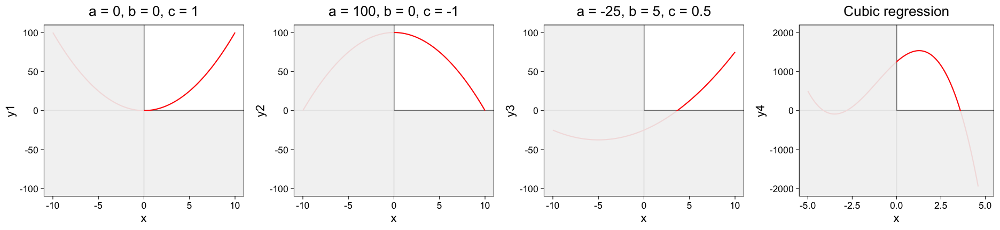
a controls how quickly the parabola increases with X. If it is positive the parabola goes up and is trough-shaped, a negative value of a inverts the parabola. The parameter c controls the height of the parabola and the value of b controls the sideways displacement of the parabola.
Taylor’s theorem

Taylor’s theorem says that you can approximate any smooth function with an infinite sum of polynomials.
You can use a polynomial function to get arbitrarily close to a smooth function by fitting an equation like \(Y = a + bX + cX^{2} + dX^{3} +eX^{4}\)
R provides helper functions that produce orthogonal (i.e. uncorrelated) polynomials
poly(X, degree = 4)→ problem: outside the data range of the data predictions shoot off to +/- Inf- alternative: use the natural spline with
splines::ns(X, df = 4)
source image: Wikipedia (under CCO licence)
{kind=link}
Exponential growth or decay
Curves following exponential growth or decay occur in many areas of biology. A general exponential growth is represented by \(Y =a * e^{bX}\), a decay by \(Y = a * e^{-bX}\).
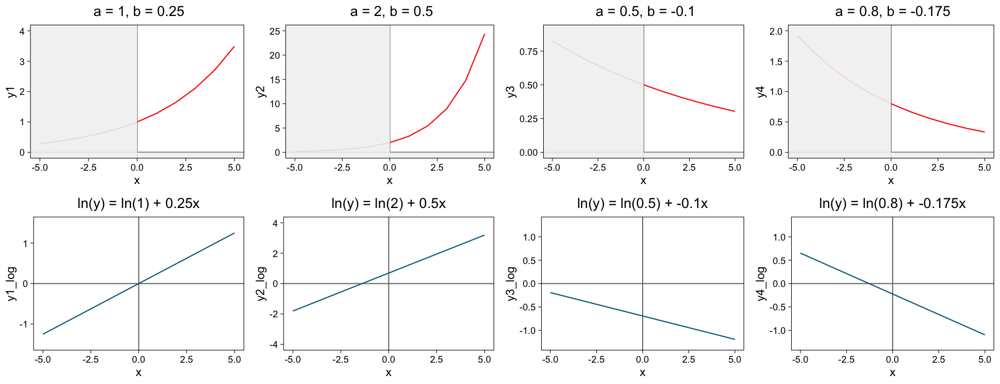
Exponential growth or decay
Curves following exponential growth or decay occur in many areas of biology. A general exponential growth is represented by \(Y =a * e^{bX}\), a decay by \(Y = a * e^{-bX}\).
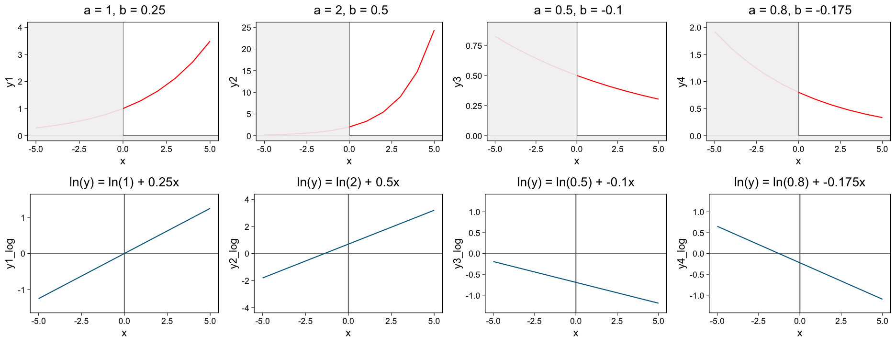
Since the natural log is the inverse function of an exponential function, ln(exp(x)) = x, an exponential curve can be changed into a linear relationship by taking the natural log of both sides of the equation.
Linearizating relationships through transformations
source: Zuur et al., 2007 (Chapter 4)
Example: Weight ~ Length relationship
A typical example for a linear relationship, which cannot be described by linear graph, is in marine biology the weight-length relationships. For most species, it will follow a 2 parameter power function: \(W = aL^{b}\)
Lengths and weights for Chinook Salmon from three locations in Argentina (data is provided in the FSA package).
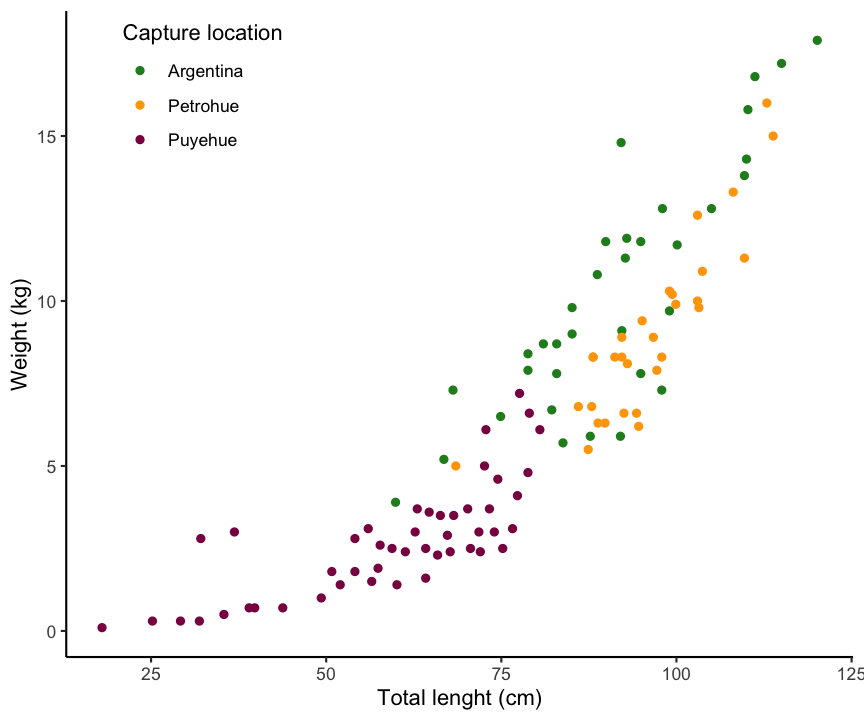
Applying the bulging rule
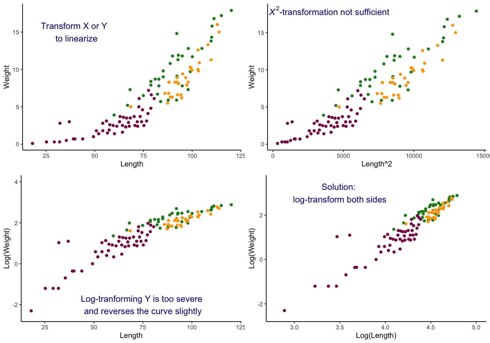
General rule for common transformations
- Square root transformation:
sqrt()- Count data.
- Variance is about equal to the mean.
- Log transformation:
log()- Variances are not similar or larger than the mean.
- If the variables contains zeros add a constant (should be a proportionally small value) to each of the observations:
log(X+1)orlog1p() - to back calculate:
exp(X_log)orexpm1(X_log)if 1 was added
- Arcsine transformation:
asin()- Percentages and proportions
2. Generate a fitted model
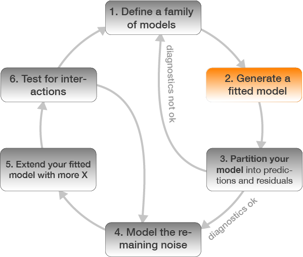
Once you defined the model family
- you can estimate the coefficients (in an iterative process) yourself
- or you select the appropriate R function and the coefficents are automatically estimated.
- The choice of function depends on the model family but also the data type and distribution of Y:
An overview of common linear models
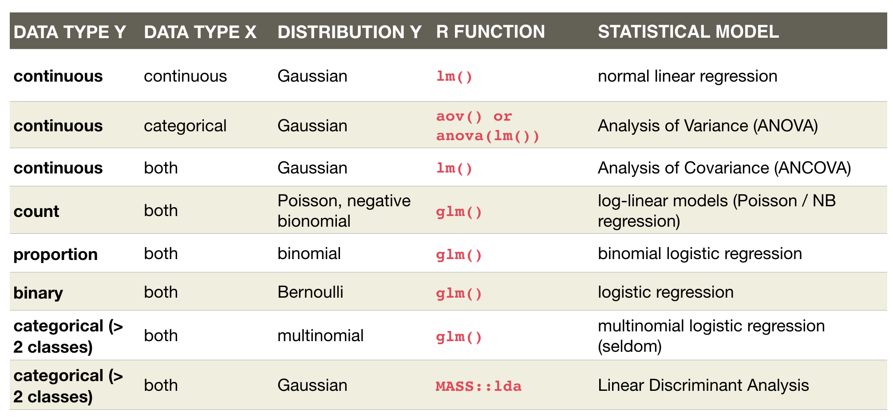
Defining the model family in the R formula
Focus on simple normal linear regression models
- Straight line:
lm(formula = Y ~ X, data) - Relationship with polynomials:
- Quadratic:
lm(Y ~ poly(X,2), data)or~ splines::ns(X, 2) - Cubic:
lm(Y ~ poly(X,3), data)or~ splines::ns(X, 3)
- Quadratic:
- Linearize the relationship:
lm(formula = log(Y) ~ X, data)lm(formula = Y ~ log(X), data)lm(formula = log(Y) ~ log(X), data)
Formulas
You can see how R defines the model by using model_matrix() from the modelr package
df <- data.frame(y = c(10,20, 30), x1 = c(5,10,15))
model_matrix(df, y ~ x1)
## # A tibble: 3 x 2
## `(Intercept)` x1
## <dbl> <dbl>
## 1 1 5
## 2 1 10
## 3 1 15
Formulas (cont)
Now with polynomials
model_matrix(df, y ~ poly(x1, 2))
## # A tibble: 3 x 3
## `(Intercept)` `poly(x1, 2)1` `poly(x1, 2)2`
## <dbl> <dbl> <dbl>
## 1 1 -7.07e- 1 0.408
## 2 1 -9.42e-17 -0.816
## 3 1 7.07e- 1 0.408
Categorical X variables
If X is categorical it doesn't make much sense to model \(Y = a + bX\) as \(X\) cannot be multiplied with \(b\). But R has a workaround:
- categorical predictors are converted into multiple continuous predictors
- these are so-called dummy variables
- each dummy variable is coded as 0 (FALSE) or 1 (TRUE)
- the no. of dummy variables = no. of groups minus 1
- all linear models fit categorical predictors using dummy variables
The data
df
## y length
## 1 5.3 S
## 2 7.4 S
## 3 11.3 L
## 4 17.9 M
## 5 3.9 L
## 6 17.6 M
## 7 18.4 L
## 8 12.8 L
## 9 12.1 M
## 10 1.1 L
The dummy variables
model_matrix(df, y ~ length)
## # A tibble: 10 x 3
## `(Intercept)` lengthM lengthS
## <dbl> <dbl> <dbl>
## 1 1 0 1
## 2 1 0 1
## 3 1 0 0
## 4 1 1 0
## 5 1 0 0
## 6 1 1 0
## 7 1 0 0
## 8 1 0 0
## 9 1 1 0
## 10 1 0 0
Where did the length class L go?
The data
df
## y length
## 1 5.3 S
## 2 7.4 S
## 3 11.3 L
## 4 17.9 M
## 5 3.9 L
## 6 17.6 M
## 7 18.4 L
## 8 12.8 L
## 9 12.1 M
## 10 1.1 L
The dummy variables
model_matrix(df, y ~ length)
## # A tibble: 10 x 3
## `(Intercept)` lengthM lengthS
## <dbl> <dbl> <dbl>
## 1 1 0 1
## 2 1 0 1
## 3 1 0 0
## 4 1 1 0
## 5 1 0 0
## 6 1 1 0
## 7 1 0 0
## 8 1 0 0
## 9 1 1 0
## 10 1 0 0
L is represented by the intercept !
Overview of model formulae in R

source: Crawley (2007)
3. Partition your model

Partition your model into predicted values and residuals
Predicted values: Check modelfit 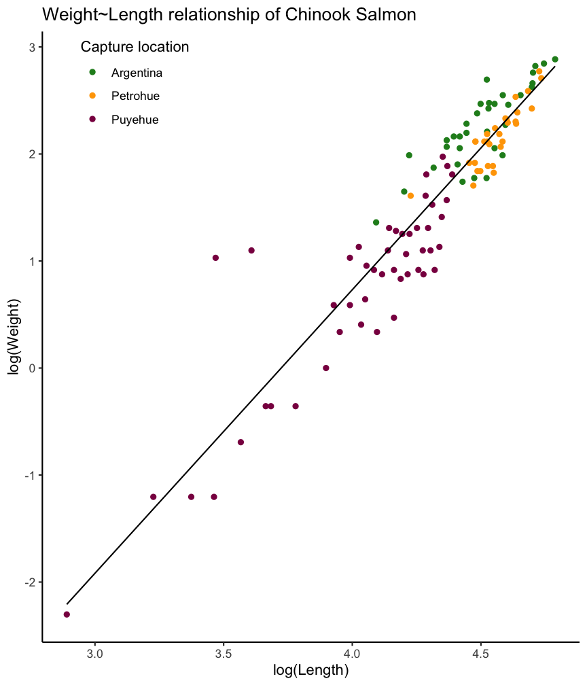
Residuals: Check assumptions

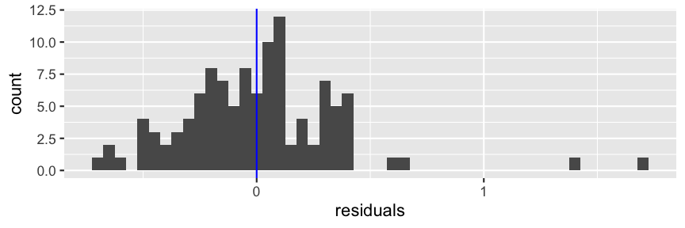
4. Model the remaining noise

2 different ways to understand what the model captures
- Study the model family and fitted coefficients (common in statistical modelling courses).
- Understanding a model by looking at its predictions and what it does not capture (the pattern in the residuals, i.e. the deviation of each observation from its predicted value) (getting more popular these days).
- Particularly studying the residuals helps to identify less pronounced patterns in the data.
Residual patterns
A typical example where residuals are modelled is in fishery ecology when studying recruitment success:
Best practice:
Model the residual ~ every X variable not included in the model
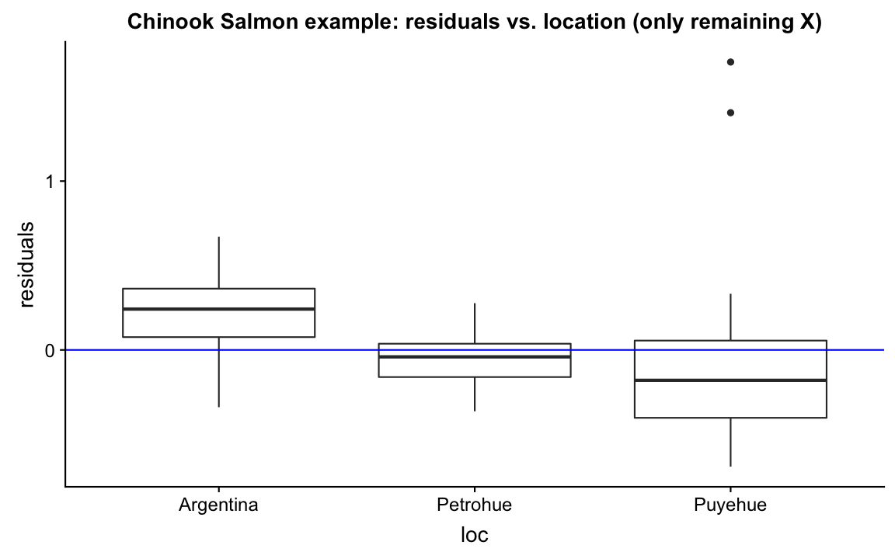
Residuals show a distinct pattern: The model seems to underestimate the weight in Argentina and overestimate in Puyehue.
5. Extend your fitted model with more X

Chinook Salmon example: add loc as X variable to the model
mod2 <- lm(formula = w_log ~ tl_log + loc, data = ChinookArg)
# alternatively
mod2 <- update(mod, .~. + loc)
Check modelfit and diagnostics again
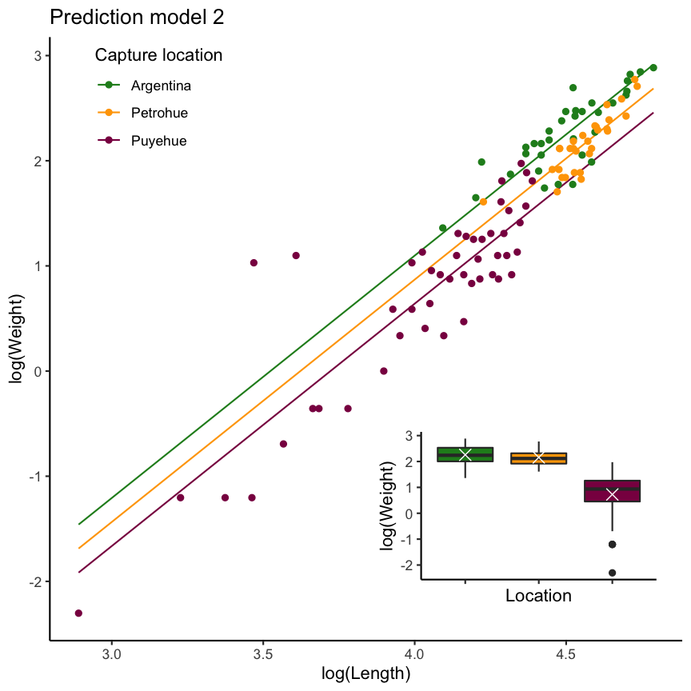

summary(mod2)
##
## Call:
## lm(formula = w_log ~ tl_log + loc, data = ChinookArg)
##
## Residuals:
## Min 1Q Median 3Q Max
## -0.60633 -0.19351 -0.00076 0.14352 1.61286
##
## Coefficients:
## Estimate Std. Error t value Pr(>|t|)
## (Intercept) -8.12169 0.56827 -14.292 < 2e-16 ***
## tl_log 2.30492 0.12563 18.347 < 2e-16 ***
## locPetrohue -0.22813 0.08013 -2.847 0.00528 **
## locPuyehue -0.45699 0.09231 -4.951 2.74e-06 ***
## ---
## Signif. codes: 0 '***' 0.001 '**' 0.01 '*' 0.05 '.' 0.1 ' ' 1
##
## Residual standard error: 0.3186 on 108 degrees of freedom
## Multiple R-squared: 0.8962, Adjusted R-squared: 0.8934
## F-statistic: 311 on 3 and 108 DF, p-value: < 2.2e-16
6. Test for interactions
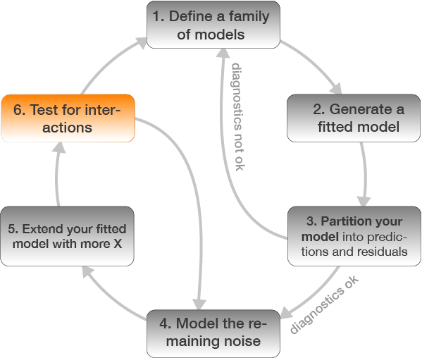
Chinook Salmon example: include tl_log:loc interaction
mod3 <- lm(formula = w_log ~ tl_log * loc, data = ChinookArg)
# alternatively
mod3 <- update(mod2, .~. + tl_log:loc)
Check modelfit and diagnostics again

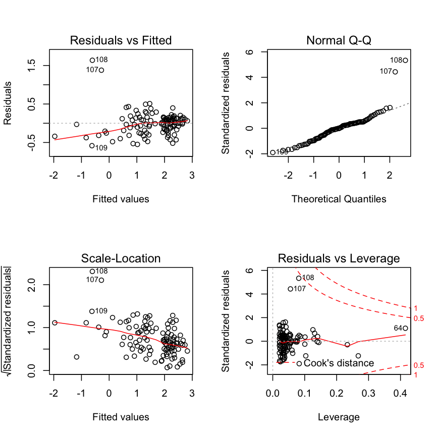
summary(mod3)
##
## Call:
## lm(formula = w_log ~ tl_log + loc + tl_log:loc, data = ChinookArg)
##
## Residuals:
## Min 1Q Median 3Q Max
## -0.58273 -0.18471 -0.00186 0.13088 1.63620
##
## Coefficients:
## Estimate Std. Error t value Pr(>|t|)
## (Intercept) -6.6750 1.5904 -4.197 5.64e-05 ***
## tl_log 1.9836 0.3530 5.619 1.56e-07 ***
## locPetrohue -2.3957 3.1494 -0.761 0.449
## locPuyehue -2.0696 1.6868 -1.227 0.223
## tl_log:locPetrohue 0.4795 0.6928 0.692 0.490
## tl_log:locPuyehue 0.3624 0.3793 0.955 0.342
## ---
## Signif. codes: 0 '***' 0.001 '**' 0.01 '*' 0.05 '.' 0.1 ' ' 1
##
## Residual standard error: 0.3201 on 106 degrees of freedom
## Multiple R-squared: 0.8972, Adjusted R-squared: 0.8924
## F-statistic: 185 on 5 and 106 DF, p-value: < 2.2e-16
Interpreting models with categorical X variables
Recall: Categorical X variables
If X is categorical it doesn't make much sense to model \(Y ~ a + bX\) as \(X\) cannot be multiplied with \(b\). But R has a workaround:
- categorical predictors are converted into multiple continuous predictors
- these are so-called dummy variables
- each dummy variable is coded as 0 (FALSE) or 1 (TRUE)
- the no. of dummy variables = no. of groups minus 1
- all linear models fit categorical predictors using dummy variables
Only categorical X
Differences of Chinook Salmon weight between three locations in Argentina
chin_mod <- lm(w_log ~ loc, ChinookArg)
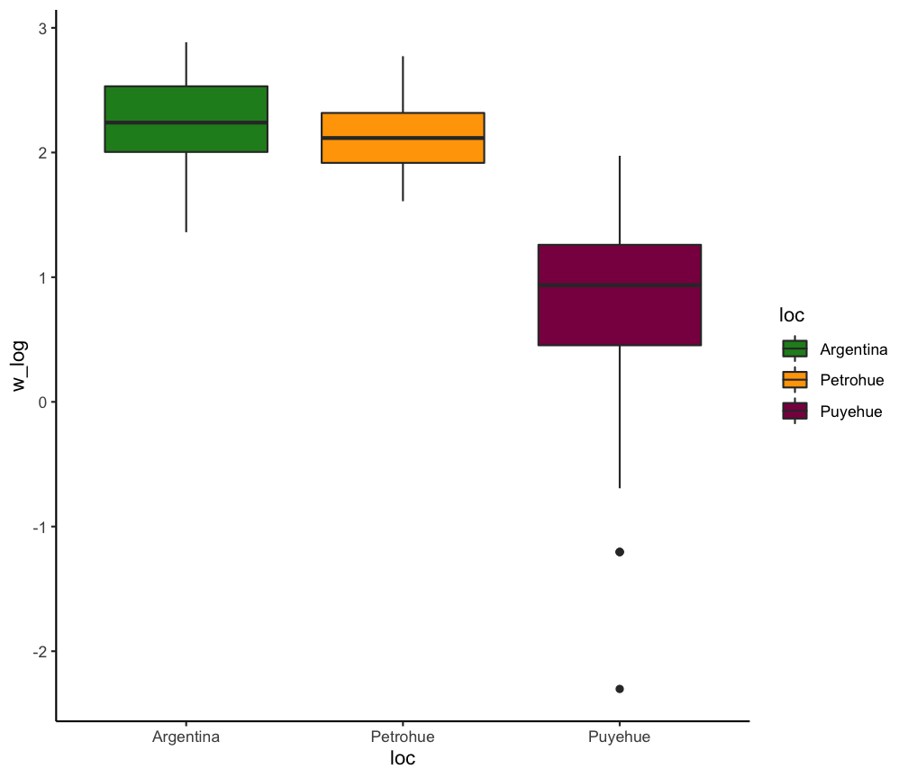
Your turn...
How would you interpret these coefficients?
chin_mod <- lm(w_log ~ loc, ChinookArg)
coef(chin_mod)
## (Intercept) locPetrohue locPuyehue
## 2.25605528 -0.09844412 -1.52993775
What is the regression equation for each location?
How would you interpret these coefficients?
R generates dummy variable to be able to apply regressions on categorical variables. We can see this using the model.matrix() function:
model.matrix(w_log ~ loc, ChinookArg) %>%
as.data.frame(.) %>%
# adding the location variable from the original data
mutate(sampl_loc = ChinookArg$loc) %>%
head()
## (Intercept) locPetrohue locPuyehue sampl_loc
## 1 1 0 0 Argentina
## 2 1 0 0 Argentina
## 3 1 0 0 Argentina
## 4 1 0 0 Argentina
## 5 1 0 0 Argentina
## 6 1 0 0 Argentina
We can see that the first 10 fish were sampled at the location 'Argentina' and that these observations were coded 1 for the variable 'intercept' (representing the first factor level → here Argentina) and 0 for the variable locPetrohue and locPuyehue.
Apply the estimated coefficients to the regression equation with dummy variables:

Only categorical X - ANOVA
Linear regression with a categorical variable, is the equivalent
of ANOVA (ANalysis Of VAriance). To see the output as an
ANOVA table, use anova() on your lm object
anova(chin_mod)
## Analysis of Variance Table
##
## Response: w_log
## Df Sum Sq Mean Sq F value Pr(>F)
## loc 2 60.542 30.2711 73.097 < 2.2e-16 ***
## Residuals 109 45.140 0.4141
## ---
## Signif. codes: 0 '***' 0.001 '**' 0.01 '*' 0.05 '.' 0.1 ' ' 1
Only categorical X - ANOVA
Alternatively, use aov() instead of lm()
chin_aoc <- aov(w_log ~ loc, ChinookArg)
summary(chin_aoc)
## Df Sum Sq Mean Sq F value Pr(>F)
## loc 2 60.54 30.271 73.1 <2e-16 ***
## Residuals 109 45.14 0.414
## ---
## Signif. codes: 0 '***' 0.001 '**' 0.01 '*' 0.05 '.' 0.1 ' ' 1
Categorical and continuous X variables: ANCOVA
- ANalysis of COVAriance (ANCOVA) is a hybrid of a linear regression and ANOVA.
- Has at least one continuous and one categorical explanatory variable.
- Some consider ANCOVA as an "ANOVA"" model with a covariate included → focus on the factor levels adjusted for the covariate (e.g. Quinn & Keough 2002).
- Some consider it as a "Regression" model with a categorical predictor → focus on the covariate adjusted for the factor (e.g. Crawley 2007).
- The typical "maximal" model involves estimating an intercept and slope (regression part) for each level of the categorical variable(s) (ANOVA part) → i.e., including an interaction
Chinook Salmon weight as a function of location AND length
without interaction 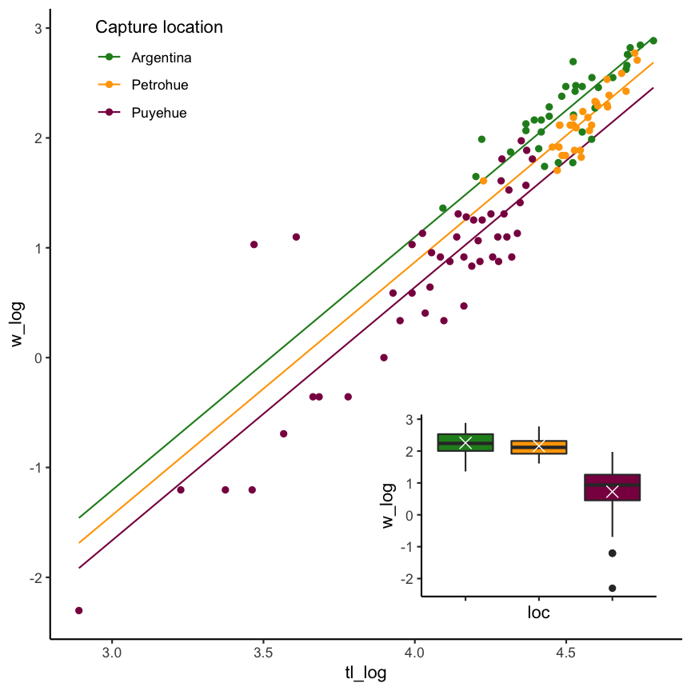
with interaction 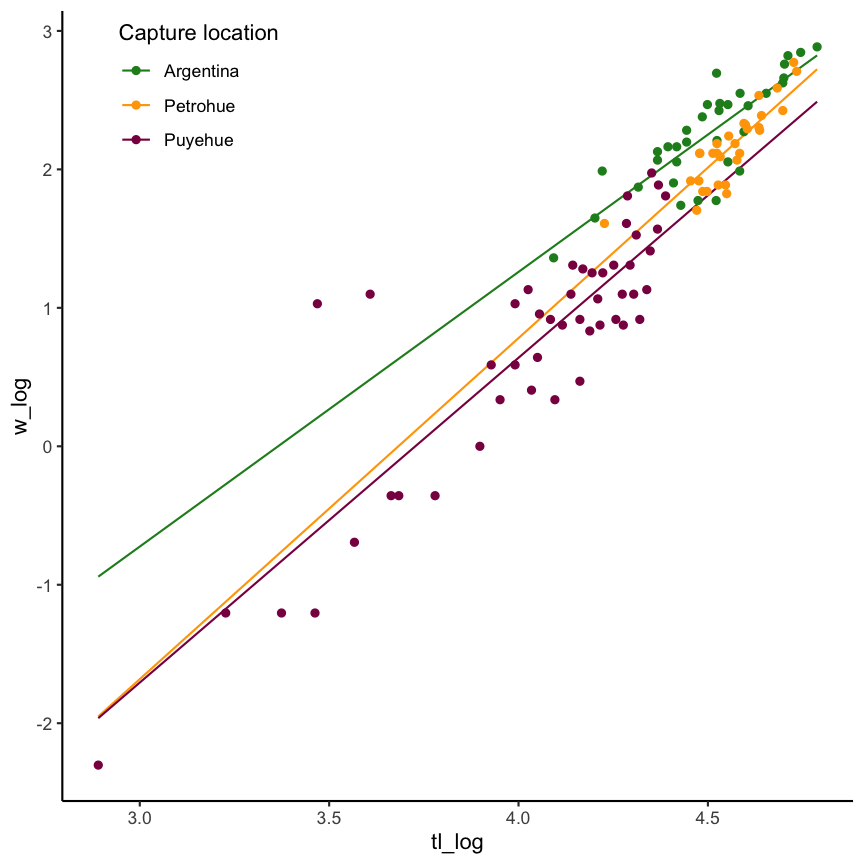
Regression view of an ANCOVA
\[w.log_{ij} = \alpha_{i} + \beta_{i}*tl.log_{j} + \epsilon_{ij}\]
where i = location, j = each individual fish
Regression view of an ANCOVA
Location-specific equations
\[w.log_{Arg,j} = \alpha_{Arg} + \beta_{Arg}*tl.log_{j} + \epsilon_{Arg,j}\]
\[w.log_{Pet,j} = \alpha_{Pet} + \beta_{Pet}*tl.log_{j} + \epsilon_{Pet,j}\]
\[w.log_{Puy,j} = \alpha_{Puy} + \beta_{Puy}*tl.log_{j} + \epsilon_{Puy,j}\]
Your turn...
ANCOVA Interpretation
Run the following 2 models and formulate for both models the location-specific equations with the estimated coefficients
library(FSA)
ChinookArg <- mutate(ChinookArg,
tl_log = log(tl), w_log = log(w))
chin_ancova1 <- lm(w_log ~ loc + tl_log, ChinookArg)
chin_ancova2 <- lm(w_log ~ loc * tl_log, ChinookArg)
Solution
ANCOVA 1 - no interaction
\(w.log = a1 + a2*locPetrohue + a3*locPuyehue+ b*tl.log\)
The estimate for the mean weight at location Argentina:
\(w.log_{Arg} = a1 + a2*0 + a3*0 + b*tl.log\) = -8.12+2.3*tl_log
The estimate for the mean weight at location Petrohue:
\(w.log_{Pet} = a1 + a2*1 + a3*0 + b*tl.log\)
= -8.12+-0.23+2.3*tl_log = -8.35 + 2.3*tl_log
The estimate for the mean weight at location Puyehue:
\(w.log_{Puy} = a1 + a2*0 + a3*1 + b*tl.log\)
= -8.12+-0.46+2.3*tl_log = -8.58+2.3 * tl_log
ANCOVA 2 - with interaction
\(\begin{eqnarray} w.log = a1 + a2*locPetrohue + a3*locPuyehue + \\ b1*tl.log+ b2*tl.log + b3*tl.log \end{eqnarray}\)
The estimate for the mean weight at location Argentina:
\(w.log_{Arg}\) = -6.67+2.3*tl_log
The estimate for the mean weight at location Petrohue:
\(w.log_{Pet}\) = -6.67+-2.4+1.98*tl_log+0.48*tl_log = -9.07 + 2.46 * tl_log
The estimate for the mean weight at location Puyehue:
\(w.log_{Puy}\) = = -6.67+-2.07+1.98*tl_log+0.36*tl_log = -8.74 + 2.34 * tl_log
Model selection
How to compare and choose the best model?
- Based on best goodness-of-fit: How well do the model fit a set of observations.
- How to judge this?
- visually
- using a criterion that summarize the discrepancy between observed values and the values expected under the model, e.g.
- explained variance (\(R^{2}\))
- Akaike's Information Criterion (AIC) and modifications
- Bayesian Information Criterion (BIC)
- A good book on that subject is written by Anderson & Burnham 2002: Model Selection and Multimodel Inference - A Practical Information-Theoretic Approach
Akaike's Information Criterion
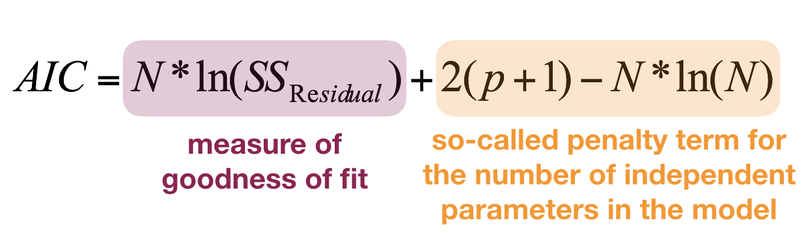
- The AIC is a relative measure, not an absolute as \(R^2\): the values can only be compared between models fitted to the same observations and same Y variables. You can't compare models fitted to different data subsets or if Y is partly transformed!
- The lower the AIC the better.
- Rule of thumb: if difference between 2 models in AIC is < 2 than choose the more simple model.
- R function:
AIC()
Akaike's Information Criterion
- The AIC is a relative measure, not an absolute as \(R^2\): the values can only be compared between models fitted to the same observations and same Y variables. You can't compare models fitted to different data subsets or if Y is partly transformed!
- The lower the AIC the better.
- Rule of thumb: if difference between 2 models in AIC is < 2 than choose the more simple model.
- R function:
AIC()
But note:
the AIC can only be compared between models that are fitted on the same Y observations! Hence, models with transformed and untransformed Y cannot be directly compared using the AIC!Akaike's Information Criterion
Chinook example:
m1 <- lm(w_log ~ loc, ChinookArg)
m2 <- lm(w_log ~ tl_log, ChinookArg)
m3 <- lm(w_log ~ loc + tl_log, ChinookArg)
m4 <- lm(w_log ~ loc * tl_log, ChinookArg)
AIC(m1, m2, m3, m4)
## df AIC
## m1 4 224.06339
## m2 3 87.69126
## m3 5 67.57480
## m4 7 70.53732
Which model shows the best performance based on the AIC?
Principle of parsimony (Occam‘s Razor):
- As few parameters as possible.
- Models should be minimal adequate.
- Simple explanations should be preferred.
- Linear models should be preferred to non-linear models.

p
Beware
There is a temptation to become personally attached to a particular model. Statisticians call this 'falling in love with a model'.
Always keep in mind:
- All models are wrong, but some are useful.
- Some models are better than others.
- The correct model can never be known with certainty.
- The simpler the model, the better it is.
Your turn...
Exercise: Find the 'true' model or the underlying function
Exercise: Find the 'true' model or the underlying function
I generated different dataframes where the Y variable was modelled as a specific function of X plus some random noise. Load the datasets and see what objects you loaded with ls()
load("data/find_model.R")
ls()
You should see 10 dataframes. Try to find the 'true' models for df1, df2, df3, df4, and df5 by fitting different model families and compare their performance
- using the AIC (with function
AIC(model1, model2, model3,..)) and - plotting the predicted values to the observed ones and the residual histograms.
Once you think you found it, apply your models on the dataframes that do not contain the random noise (e.g. df1_nonoise for df1) and compare results.
Overview of functions for modelling and interpretation
| What | Function |
|---|---|
| Lin. regression & ANCOVA | lm() |
| ANOVA | aov() or anova(lm()) |
| Coefficients | coef(mod) |
| Complete numerical output | summary(mod) |
| Confidence intervals | confint(mod) |
| Prediction | predict(mod), modelr::add_predictions(data, mod) |
| Residuals | resid(mod), modelr::add_residuals(data, mod) |
| Diagnostic plots | plot(mod), acf(resid(mod)) |
| Model comparison | AIC(mod1, mod2, mod3) |
How do you feel now.....?
Totally confused?

Practice on the Chinook salmon dataset and read
- chapter 23 on model basics and chapter 24 on model building in the "R for Data Science"" book, as well as
- chapter 9 (statistical modelling) in "The R book" (Crawley, 2013) (an online pdf version is freely available here).
Totally bored?

Stay tuned for the next case study where you can play around as much as you want to!
Totally content?
Then go grab a coffee, lean back and enjoy the rest of the day...!

Thank You
For more information contact me: saskia.otto@uni-hamburg.de
http://www.researchgate.net/profile/Saskia_Otto
http://www.github.com/saskiaotto

This work is licensed under a
Creative Commons Attribution-ShareAlike 4.0 International License except for the
borrowed and mentioned with proper source: statements.
Image on title and end slide: Section of an infrared satallite image showing the Larsen C
ice shelf on the Antarctic
Peninsula - USGS/NASA Landsat:
A Crack of Light in the Polar Dark, Landsat 8 - TIRS, June 17, 2017
(under CC0 license)
Solution
Example to find the best model: df1
1.Apply different models and compare first their AIC.
load("data/find_model.R")
dat <- df1 # this way you can simply
# replace the dataframes later
dat$y_log <- log(dat$y + 0.001)
dat$x_log <- log(dat$x)
m1 <- lm(y ~ x, data = dat)
m2 <- lm(y ~ poly(x,2), data = dat)
m3 <- lm(y ~ poly(x,3), data = dat)
m4 <- lm(y_log ~ x, data = dat)
m5 <- lm(y_log ~ x_log, data = dat)
AIC(m1,m2,m3)
## df AIC
## m1 3 185.24425
## m2 4 37.56960
## m3 5 34.61143
AIC(m4,m5)
## df AIC
## m4 3 174.5666
## m5 3 139.7156
Remember:
the AIC can only be compared between models that are fitted on the same Y observations! Hence, models with log-transformed Y values and those without CANNOT be compared using the AIC.Example to find the best model: df1
2.Prediction plots → to compare all models at the same scale, back-transform the log-model predictions
dat <- spread_predictions(
data = dat, m1,m2,m3,m4,m5) %>%
mutate(m4 = (exp(m4) - 0.001),
m5 = (exp(m5) - 0.001))
dat_long <- dat %>%
select(x, m1,m2,m3,m4,m5) %>%
gather(key = "model", "pred", -x) %>%
mutate(model = factor(model,
labels = c("m_lm", "m_poly2",
"m_poly3","m_log_y","m_log_both")))
dat_long %>% ggplot(aes(x,pred)) +
geom_line(aes(colour = model)) +
geom_point(data = dat, aes(y = y))
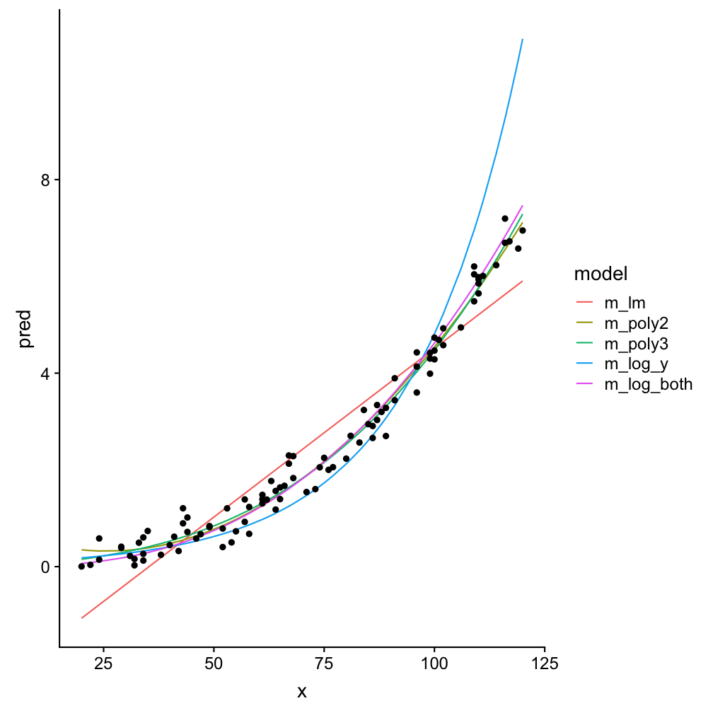
Example to find the best model: df1
3.Residual plots
# Residual plots
r <- dat %>%
spread_residuals(m1,m2,m3,m4,m5) %>%
ggplot()+ geom_vline(xintercept = 0,
colour = "blue", size = 0.5)
r1 <- r + ggtitle("m_lm") +
geom_histogram(aes(x = m1)) +
r2 <- r + ggtitle("m_poly2") +
geom_histogram(aes(x = m2))
r3 <- r + ggtitle("m_poly3") +
geom_histogram(aes(x = m3))
r4 <- r + ggtitle("m_log_y") +
geom_histogram(aes(x = m4))
r5 <- r + ggtitle("m_log_all") +
geom_histogram(aes(x = m5))
gridExtra::grid.arrange(grobs =
list(r1,r2,r3,r4,r5), ncol = 3)
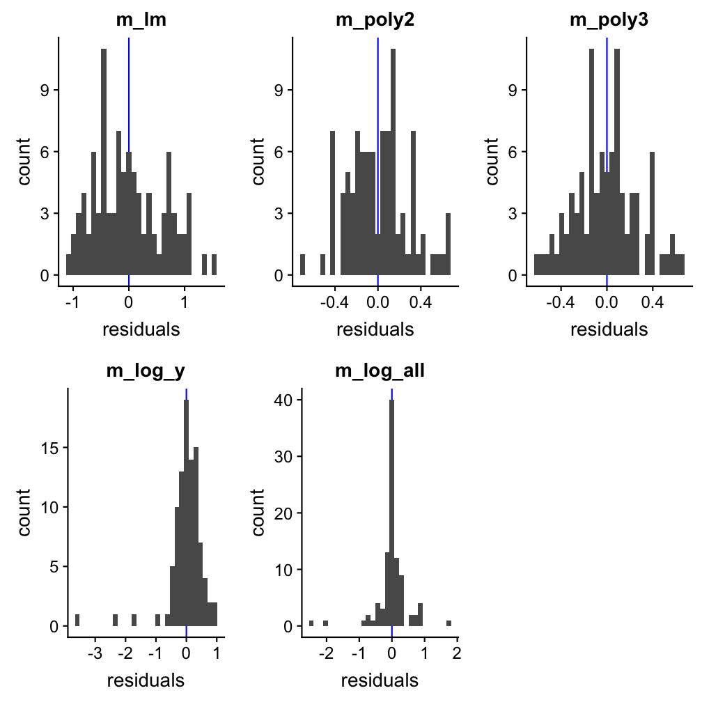
Example to find the best model: df1
The AIC indicates best performances for models m3 (polynomial of order 3) and m5 (X and X both log-transformed). Also the prediction plots and the residual plots support this. In fact, the prediction plot does not show a big difference between both models. The residual plots, on the other hand, might provide some support for m5 as a high number of y values deviate little from their predictions.
To really find out which model has the true underlying function, used to create this dataset, we need to apply the models on the dataset without noise:
Example to find the best model: df1_nonoise
1.Apply models to the data without noise
dat <- df1_nonoise
dat$y_log <- log(dat$y + 0.001)
dat$x_log <- log(dat$x)
m1 <- lm(y ~ x, data = dat)
m2 <- lm(y ~ poly(x,2), data = dat)
m3 <- lm(y ~ poly(x,3), data = dat)
m4 <- lm(y_log ~ x, data = dat)
m5 <- lm(y_log ~ x_log, data = dat)
AIC(m1,m2,m3)
## df AIC
## m1 3 156.3179
## m2 4 -397.3983
## m3 5 -990.3074
AIC(m4,m5)
## df AIC
## m4 3 11.89622
## m5 3 -1066.44843
Example to find the best model: df1_nonoise
2.Prediction plots without noise
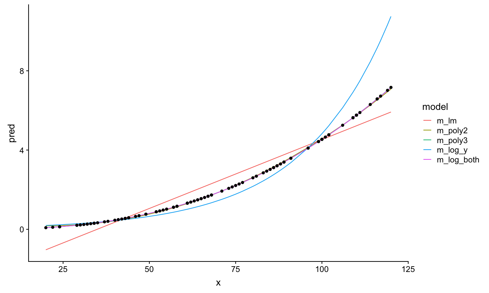
Example to find the best model: df1_nonoise
3.Residual plots without noise
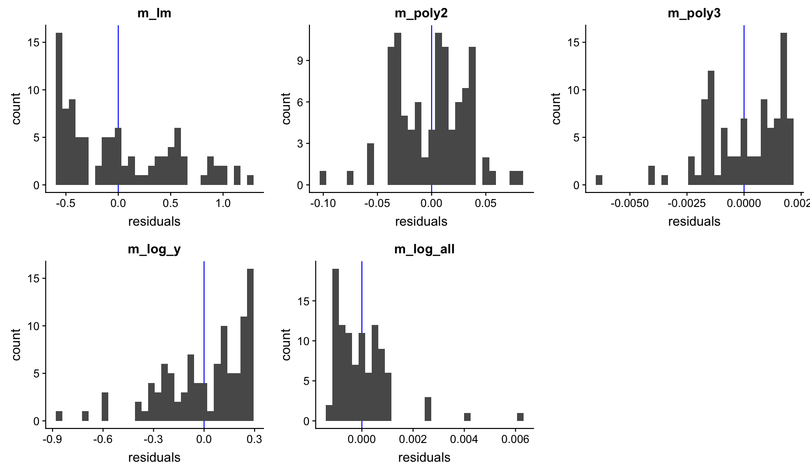
Example to find the best model: df1_nonoise
Now it becomes clear that the underlying function is an exponental function of the form \(Y=aX^{b}\).
For comparison:
# This is the true underlying function
set.seed(123)
x <- sample(20:120, size = 100,
replace = TRUE)
y_noise <- rnorm(100, 0, 0.3)
a <- exp(-10)
b <- 2.5
y <- a * x^b + y_noise
m5_comp <- lm(log(y) ~ log(x))
coefficients(m5_comp)
## (Intercept) log(x)
## -10.662521 2.648546
Solution of all 5 models
df1: \(Y_{i}=aX_{i}^{b}+\epsilon_{i}\) , with a = exp(-10), b = 2.5
df2: \(Y_{i}=a+b1X_{i}+b2X_{i}^{2}+b3X_{i}^{3}+\epsilon_{i}\) , with a = 1250, b1 = 400, b2 = -100, b3 = -30
df3: \(Y_{i}=a+b1X_{i}+b2X_{i}^{2}+\epsilon_{i}\) , with a = 100, b1 = -5, b2 = 0.5
df4: \(Y_{i}=ae^{bX_{i}}+\epsilon_{i}\) , with a = 20, b = 0.025
df5: \(Y_{i}=ae^{-bX_{i}}+\epsilon_{i}\) , with a = 10, b = -0.025